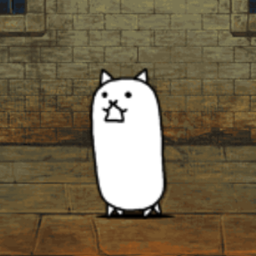
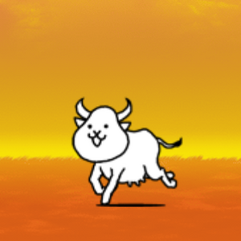
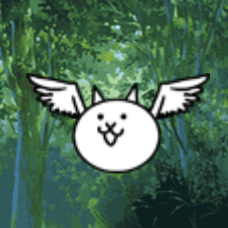
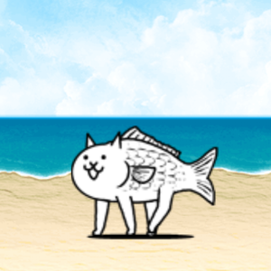
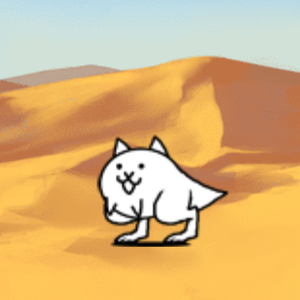
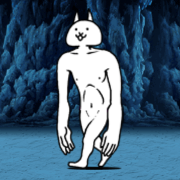

CAT
El Gato es la primera Unidad Felina disponible al iniciar el juego. Su forma Verdadera aumenta considerablemente su poder de ataque y salud.
TIPO: MEATSHIELD

Bienvenido a la Wiki de The Battle Cats, aquí encontrarás información sobre tus personajes favoritos.
El Gato es la primera Unidad Felina disponible al iniciar el juego. Su forma Verdadera aumenta considerablemente su poder de ataque y salud.
TIPO: MEATSHIELD
Unidad básica con mucha más vida que el Gato normal. Ideal como escudo barato y spameable.
TIPO: MEATSHIELD
Gato con buen daño contra enemigos Rojos. Muy útil en las primeras etapas.
TIPO: ANTI-RED

Versión evolucionada del Gato que hace daño en área pequeña. Muy barato y rápido de producir.
TIPO: AREA ATTACK
Alta velocidad de ataque y movimiento. Excelente para rushear etapas tempranas.
TIPO: RUSHER
Rápido y con ataque en área. Muy útil contra grupos de Peons y Flying.
TIPO: AREA ATTACK / ANTI-FLYING
Gran daño y resistencia contra enemigos Rojos. Uno de los mejores early-game.
TIPO: ANTI-RED / TANK
Excelente rango y daño en área. Perfecto para controlar oleadas.
TIPO: LONG RANGE AREA
Enorme daño y salud. El primer “boss unit” que puedes conseguir.
TIPO: GENERALIST TANK
